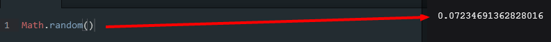

HTML
The Basics
These are the basic elements you will need in your HTML/CSS document:
- !DOCTYPE html: this is a tag that you always start your HTML document with. It's a must!
- html: this tag begins whatever code you enter in to your html document.
- head: This element stores the tags/elements (like style or title) that alter your webpage, but don't actually show up on your page at all (as opposed to p or h1).
So all in all, your beginning HTML document (with all the basics) should look something like this:
.png)
Writing Basics
The main tools you need to enter text on to your webpage come in the following forms:
- p: This stands for parapgraph and is the standard text entry, for everthing from a paragrapah to half a sentence.
- h1(2,3,4,5,6): The h stands for header. The number following h dictates the text size of the header. H1 is the largest header and h6 is the smallest.
Here are examples of both:
.png)
Links and Images
These elements are for inserting pictures and links, both seperately and together!
- a href: this is how you insert a link to another webpage. You would wrap the a tag around whatever word you wanted to make a hyperlink. For instance, this is what it would look like to go to facebook using the word Facebook:
.png)
- mailto: you can also use a text to link to a window where you can actually mail a certain email address. It would look something like this:

- img src: this stands for image source and is how you pull in an image from a URL or your computer. If you wanted to use a link to an image using a URL this is how you would format this element:
.png)
HTML Entities
There are certain symbols that are not allowed in HTML, for instance the > and the < sign (among others). Here is a chart on how to write them within an .html document:

Commenting
You can comment within the HTML document in a way that won't show up in the final product at all but using the following code:

Functions
One random side note about functions is that when you use parenthesis at the end of the function (ex myFunction()), then it calls the function and yields whatever the outcome of the function is. If you use it without parenthesis (ex myFunction), then it calls only the function itself.
JavaScript
If... else... formatting
You want to make sure that you get the formatting for the If... else... comparison statements right, else it will bite you in the butt (see what I did there?)
Here is a proper example:

Document.write
You are able to write directly in to the HTML output using the command document.write command.
However one thing to note is to make sure that you use the document.write command only in the HTML output, otherwise it will overwrite the document.
Prompt command
A prompt will simply (when excecuted) pop up a little prompt window with the text you put within the prompt command and a space for the user to type a response which will then be returned back to the JavaScript. However you also can also put text in the response box that they will type over, simply enter two different strings and seperate them by a comma, like this:

While Loop Formatting
The while loop is similar to the for loop, but it will continue to run until the condition its running from is false. So (for example) in an array, it will continue to run through the array until it finds something that is false and then it will switch off. Here is an example to follow for the while loop.

Do/While Loop Formating
The basic idae of a do/while loop is this "do {this code once}, then start your while(loop). This makes it so that even if the while condition is false, it will still run the code once for the do portion and then will switch to the while loop. The do/while loop can be tricky so here is the formating you are going to want to follow...

Switch Statement
The switch statement makes it easer to do the idea of an if/else statement. So you can set switch(x) and then set numerous cases (or if statements) to output different outcomes depending on what x is. If x doesn't match any of the cases, then a default output is loaded. Here is an example and some notes on using the switch statement.

Operators
Operators are used so that multiple variables can be used in different functions and statements.
Commands
Math.floor: This is a command that will take the number in parenthesis and round it down to the nearest whole number.
Math.random(): This will tell the computer to generate a random number between 0 and 1.

Math.floor and Math.random together: When you use both Math.floor and Math.random together, they can actually be manipulated to produce random whole numbers.

Math.PI: This creates the pie number (you know... blueberry, pecan, apple...)
JavaScript
Type of: This will tell you what type of data something is. So you could type: console.log(typeof 42) and it would print out 'number'.
.hasOwnProperty("prop"): This interacts with an object to check to see if the given property is within the object that this command is called with (aka if you put Mat.hasOwnProperty("poop"), it will check the object Mat to see if it has a property called poop. If it does, it will print true, if it doesn't it will print false.
parseInt(): This command will convert a string in to a number. See the explanation below.

Arrays
Arrays are essentially a data storage place. You can store numbers there, strings, booleans, objects, etc. You can keep it all the same kind of data, or make it heterogeneous and have multiple types of data in it! Arrays are on a 0 based indexing system. Aka, if you want to access the first data in the set, it's actually considered 0, and the second is 1 and so on.
Another important thing to know about arrays is how to access the data stored within the array. Don't forget about the 0 based indexing rule! Check out the example below.

Also with arrays, when you apply the .length command to them, it applies it to the number of elements the array has.
Arrays can also be mulit-dimensional which basically means you can have arrays within arrays. You can have a two-dimensional array that has an array in an array which is called nesting one array within another. Check out the example below.
A jagged array is one that is mulit-dimensional where the dimensions (arrays within the original array) are different lengths.

Also a neat little trick with Arrays is how to quickly another piece of data to the array. To execute the trick, however, you need to know two things. One is that to add another piece of data to the array you use this formula: array[i] = "NewData" with the 'i' being the next number in the sequence of the array. Ex. if you have 3 pieces of data in the array, 'i' would be the 4th number, but remember that with the 0 base numbering that arrays use, in the example, i would be 3 (because you started counting at 0). So when you combine this with the fact that array.length will tell you how many pieces of data are in an array, you get the neat trick. Because array.length is not on the 0 based numbering, the outcome of array.length will always be the next number you want to put in to array[i]when creating a new piece of data for your array. Pretty neat huh?
Objects
Objects take data (strings, numbers and booleans, etc) and put them together with functions. You do this by providing keys (also known as properties) and values. You can format them in the following ways: (Object Literal Notation - ex. 1 or Object Constructor - ex. 2). Note their punctuation differences.


Also another way to use the Object Constructor method is in the following Custom Constructor. With this method you can quickly make many similar objects with all the same properties that you can either define beforehand in the function, or set as arguments that will be defined when you create the object.

For... In... Function: this function interacts with objects and can work with different properties of that object. Look at the example below for more of an explanation of the format and how it works.

also here is a good explanation of what a for... in loop is doing.

There are two ways to access your object properties. You can use dot notation or bracket notation.

Methods are very important in objects as well. They are basically similar to a n object property, but instead of holding just data (like a string or numbers), they hold a formula instead.

You can also use the keyword this to make a method available for use with any object.

Here is a helpful example of how objects and arrays can interact with each other. In it they are asking for a for loop that prints out each .name property of the objects in the array.

You can also use objects as parameters (or arguments) in functions. Check out the example below:

Classes: Classes basically are a "type" of object. When you use the Custom Constructor to make an object (like in the example below), you basically are making the class by defining what the prototype is at the very beginning. So in the below example, the class name is Person and how it is defined starting on line 1.
Extending Prototypes: The prototype of a class of objects (see above for explanation of that) can be changed (or extended) after it has been initially declared. You do this by using the following code.

Inheritance: This is the rule that there can be classes of objects that inherit properties and methods of another class. The image below helps explain.